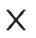
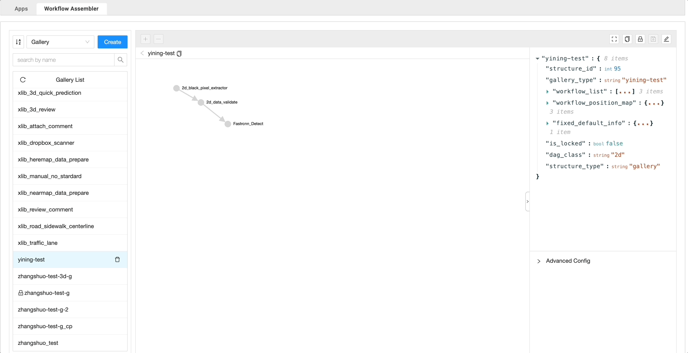
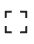
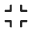

DAG graph area depicts the workflow of selected item. Users can also customize the working item by adding or re-directing the process flow in the graph area.
By clicking the + button on top of the DAG graph area, users can add new node into the DAG graph.
In the prompt window, users can either filter the selections using the Filter Tags or directly type the node name in the dropdown below to quickly locate the target note.
There is no connection from or to the new node that is added to the graph. To create a connection to other node in the graph:
Single-click on the starting node to highlight it.
Double-click on the destination nodes, note that an arrow appears between the starting node to destination node, which means the connection is established.
After users open an item from the list panel, the following tools are activated for users to modify the selected item.
Edit: By clicking on the button, the editing mode is activated and users can edit the links/nodes in the DAG graph. Users can also cancel current editings by clicking on  button.
Save: By clicking on the button, all edits will be saved to the selected item that the user is currently working on.
Lock: By clicking on the button, users can lock current item and the current item cannot be edited unless it is unlocked by clicking button.
Copy: By clicking on the button, the currently selected item will be duplicated. By default, the duplicated item will have “_cp” in its name.

Full-screen: By clicking on the  button, the DAG graph, JSON details and advanced configuration panels will enter full screen mode. Users can exit full-screen mode by clicking .
The breadcrumb navigation section indicates the hierarchy among gallery, workflow/space and worker. Users can navigate from gallery to worker or view any items in the hierarchy by clicking on the titles.

 button on the top-right corner of the window, the edit mode is activated.
button on the top-right corner of the window, the edit mode is activated.